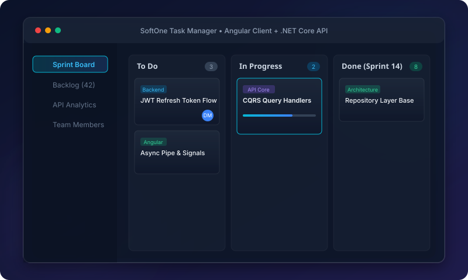

Full-Stack Enterprise
SoftOne Task Manager
Comprehensive full-stack task and sprint management system featuring an Angular TypeScript SPA client paired with a high-performance .NET Core Web API backend.
Key Architectural Highlights:
- Decoupled RESTful API with JWT token security.
- Responsive Angular Kanban board with real-time UI state.
- Clean repository pattern and EF Core data mapping.